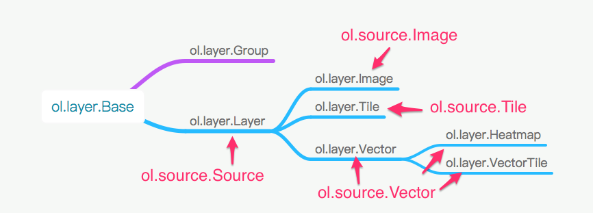

Source三大类
- 单张图片
ol.source.Image - 瓦片图片
ol.source.Tile - 矢量图形
ol.source.Vector
类图
单张图片
目前相关的类有：
ol.source.ImageArcGISRestol.source.ImageCanvas<-ol.source.ImageVectorImage Vector Layerol.source.ImageMapGuideol.source.ImageStaticol.source.ImageWMSSingle Image WMSol.source.RasterRaster Source
把他们再细分一下, ArcGIS, WMS, MapGuide, Static可以分为一类。Canvas和Raster可分为另一类。
ol.source.Image.prototype.getImage = function(extent, resolution, pixelRatio, projection) {
var sourceProjection = this.getProjection();
if (!ol.ENABLE_RASTER_REPROJECTION ||
!sourceProjection ||
!projection ||
ol.proj.equivalent(sourceProjection, projection)) {
if (sourceProjection) {
projection = sourceProjection;
}
return this.getImageInternal(extent, resolution, pixelRatio, projection);
} else {
if (this.reprojectedImage_) {
if (this.reprojectedRevision_ == this.getRevision() &&
ol.proj.equivalent(
this.reprojectedImage_.getProjection(), projection) &&
this.reprojectedImage_.getResolution() == resolution &&
this.reprojectedImage_.getPixelRatio() == pixelRatio &&
ol.extent.equals(this.reprojectedImage_.getExtent(), extent)) {
return this.reprojectedImage_;
}
this.reprojectedImage_.dispose();
this.reprojectedImage_ = null;
}
this.reprojectedImage_ = new ol.reproj.Image(
sourceProjection, projection, extent, resolution, pixelRatio,
function(extent, resolution, pixelRatio) {
return this.getImageInternal(extent, resolution,
pixelRatio, sourceProjection);
}.bind(this));
this.reprojectedRevision_ = this.getRevision();
return this.reprojectedImage_;
}
};
Image Source的核心
getImageInternal
基本流程： 是否已经加载 -> 否则根据范围加载 -> 准备好各种参数 -> 构造请求用的url -> 最后load 简单来说，就是对现有服务请求的封装。
Canvas和Raster Source的不同
在前端绘制
ImageCanvas和Raster都是直接在前端用Canvas绘制，相对来说更加复杂，但从代码看，也是比较取巧的。
ImageCanvas:
extent = extent.slice();
ol.extent.scaleFromCenter(extent, this.ratio_);
var width = ol.extent.getWidth(extent) / resolution;
var height = ol.extent.getHeight(extent) / resolution;
var size = [width * pixelRatio, height * pixelRatio];
var canvasElement = this.canvasFunction_(
extent, resolution, pixelRatio, size, projection);
if (canvasElement) {
canvas = new ol.ImageCanvas(extent, resolution, pixelRatio,
this.getAttributions(), canvasElement);
}
this.canvas_ = canvas;
Raster:
var frameState = this.updateFrameState_(currentExtent, resolution, projection);
var imageCanvas = new ol.ImageCanvas(
currentExtent, resolution, 1, this.getAttributions(), canvas,
this.composeFrame_.bind(this, frameState));
this.renderedImageCanvas_ = imageCanvas;
ol.source.Raster.prototype.composeFrame_:
for (var i = 0; i < len; ++i) {
var imageData = ol.source.Raster.getImageData_(
this.renderers_[i], frameState, frameState.layerStatesArray[i]);
if (imageData) {
imageDatas[i] = imageData;
} else {
// image not yet ready
return;
}
}
var data = {};
this.dispatchEvent(new ol.source.RasterEvent(
ol.source.RasterEventType.BEFOREOPERATIONS, frameState, data));
this.worker_.process(imageDatas, data,
this.onWorkerComplete_.bind(this, frameState, callback));
瓦片图片
相对于单张图片而言，瓦片图片需要更加精细化的控制，方能把多张小图片拼成一张大的图片。从类图可以看到，用到了
tileGrid,tileCache。 由于在线网页地图图源，基本上都是瓦片，再加上各自为政，从而出现了下面相当多的瓦片图源类：
各种ol.source.TileImage
ol.source.BingMapsBingMap Dev Bing Mapsol.source.TileArcGISRestTiled ArcGISol.source.TileJSONTileJSONol.source.TileWMSTiled WMSol.source.WMTSWMTSol.source.XYZXYZol.source.ZoomifyZoomify
以上加载瓦片的流程都是一样的，只是针对各种瓦片的请求进行封装。 getTile -> getTileInternal -> createTile_
ol.source.VectorTile
getTile -> new ol.VectorTile
矢量图片 ol.source.Vector
矢量图存在很多种类型，OpenLayers 3把他们都封装在了format这个概念里面了。
if (options.loader !== undefined) {
this.loader_ = options.loader;
} else if (this.url_ !== undefined) {
goog.asserts.assert(this.format_ !== undefined,
'format must be set when url is set');
// create a XHR feature loader for "url" and "format"
this.loader_ = ol.featureloader.xhr(this.url_, this.format_);
}
ol.featureloader.xhr = function(url, format) {
return ol.featureloader.loadFeaturesXhr(url, format,
/**
* @param {Array.<ol.Feature>} features The loaded features.
* @param {ol.proj.Projection} dataProjection Data projection.
* @this {ol.source.Vector}
*/
function(features, dataProjection) {
this.addFeatures(features);
}, /* FIXME handle error */ ol.nullFunction);
};
关键代码：
xhr.onload = function(event) {
if (xhr.status >= 200 && xhr.status < 300) {
var type = format.getType();
/** @type {Document|Node|Object|string|undefined} */
var source;
if (type == ol.format.FormatType.JSON ||
type == ol.format.FormatType.TEXT) {
source = xhr.responseText;
} else if (type == ol.format.FormatType.XML) {
source = xhr.responseXML;
if (!source) {
source = ol.xml.parse(xhr.responseText);
}
} else if (type == ol.format.FormatType.ARRAY_BUFFER) {
source = /** @type {ArrayBuffer} */ (xhr.response);
} else {
goog.asserts.fail('unexpected format type');
}
if (source) {
success.call(this, format.readFeatures(source,
{featureProjection: projection}),
format.readProjection(source));
} else {
goog.asserts.fail('undefined or null source');
}
} else {
failure.call(this);
}
}.bind(this);
各种format
readFeatures
Layer 同 Source的关系
layer何时需要使用source？
prepareFrame的时候需要
ol.renderer.canvas.ImageLayer.prototype.prepareFrame
image = imageSource.getImage(
renderedExtent, viewResolution, pixelRatio, projection);
if (image) {
var loaded = this.loadImage(image);
if (loaded) {
this.image_ = image;
}
}
ol.renderer.canvas.TileLayer.prototype.prepareFrame
var tileLayer = this.getLayer();
var tileSource = tileLayer.getSource();
...
var renderables = [];
var i, ii, currentZ, tileCoordKey, tilesToDraw;
for (i = 0, ii = zs.length; i < ii; ++i) {
currentZ = zs[i];
tilesToDraw = tilesToDrawByZ[currentZ];
for (tileCoordKey in tilesToDraw) {
tile = tilesToDraw[tileCoordKey];
if (tile.getState() == ol.TileState.LOADED) {
renderables.push(tile);
}
}
}
this.renderedTiles = renderables;
ol.renderer.canvas.VectorLayer.prototype.prepareFrame
var vectorLayer = /** @type {ol.layer.Vector} */ (this.getLayer());
goog.asserts.assertInstanceof(vectorLayer, ol.layer.Vector,
'layer is an instance of ol.layer.Vector');
var vectorSource = vectorLayer.getSource();
...
vectorSource.loadFeatures(extent, resolution, projection);
...
if (vectorLayerRenderOrder) {
/** @type {Array.<ol.Feature>} */
var features = [];
vectorSource.forEachFeatureInExtent(extent,
/**
* @param {ol.Feature} feature Feature.
*/
function(feature) {
features.push(feature);
}, this);
features.sort(vectorLayerRenderOrder);
features.forEach(renderFeature, this);
} else {
vectorSource.forEachFeatureInExtent(extent, renderFeature, this);
}
大体结构
打赏
打赏费用我将全部投入到webgis 3D引擎众筹项目